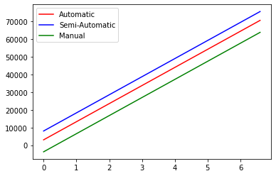

import pandas as pd
import numpy as np
import statsmodels.formula.api as smf
import seaborn as sns
import matplotlib.pyplot as plt3 Variable interactions and transformations
3.1 Variable interactions
trainf = pd.read_csv('./Datasets/Car_features_train.csv')
trainp = pd.read_csv('./Datasets/Car_prices_train.csv')
testf = pd.read_csv('./Datasets/Car_features_test.csv')
testp = pd.read_csv('./Datasets/Car_prices_test.csv')
train = pd.merge(trainf,trainp)
train.head()| carID | brand | model | year | transmission | mileage | fuelType | tax | mpg | engineSize | price | |
|---|---|---|---|---|---|---|---|---|---|---|---|
| 0 | 18473 | bmw | 6 Series | 2020 | Semi-Auto | 11 | Diesel | 145 | 53.3282 | 3.0 | 37980 |
| 1 | 15064 | bmw | 6 Series | 2019 | Semi-Auto | 10813 | Diesel | 145 | 53.0430 | 3.0 | 33980 |
| 2 | 18268 | bmw | 6 Series | 2020 | Semi-Auto | 6 | Diesel | 145 | 53.4379 | 3.0 | 36850 |
| 3 | 18480 | bmw | 6 Series | 2017 | Semi-Auto | 18895 | Diesel | 145 | 51.5140 | 3.0 | 25998 |
| 4 | 18492 | bmw | 6 Series | 2015 | Automatic | 62953 | Diesel | 160 | 51.4903 | 3.0 | 18990 |
train_updated = train[train.transmission!='Other']ols_object = smf.ols(formula = 'price~engineSize+transmission', data = train_updated)
model = ols_object.fit()
model.summary()| Dep. Variable: | price | R-squared: | 0.459 |
|---|---|---|---|
| Model: | OLS | Adj. R-squared: | 0.458 |
| Method: | Least Squares | F-statistic: | 1400. |
| Date: | Tue, 17 Jan 2023 | Prob (F-statistic): | 0.00 |
| Time: | 10:10:15 | Log-Likelihood: | -53644. |
| No. Observations: | 4959 | AIC: | 1.073e+05 |
| Df Residuals: | 4955 | BIC: | 1.073e+05 |
| Df Model: | 3 | ||
| Covariance Type: | nonrobust |
| coef | std err | t | P>|t| | [0.025 | 0.975] | |
|---|---|---|---|---|---|---|
| Intercept | 3042.6765 | 661.190 | 4.602 | 0.000 | 1746.451 | 4338.902 |
| transmission[T.Manual] | -6770.6165 | 442.116 | -15.314 | 0.000 | -7637.360 | -5903.873 |
| transmission[T.Semi-Auto] | 4994.3112 | 442.989 | 11.274 | 0.000 | 4125.857 | 5862.765 |
| engineSize | 1.023e+04 | 247.485 | 41.323 | 0.000 | 9741.581 | 1.07e+04 |
| Omnibus: | 1575.518 | Durbin-Watson: | 0.579 |
|---|---|---|---|
| Prob(Omnibus): | 0.000 | Jarque-Bera (JB): | 11006.609 |
| Skew: | 1.334 | Prob(JB): | 0.00 |
| Kurtosis: | 9.793 | Cond. No. | 11.4 |
Notes:
[1] Standard Errors assume that the covariance matrix of the errors is correctly specified.
#Visualizing the developed model with interaction terms
x = np.linspace(-train.engineSize.min(),train.engineSize.max(),100)
sns.lineplot(x = x, y = model.params['engineSize']*x+model.params['Intercept'], color = 'red')
sns.lineplot(x = x, y = model.params['engineSize']*x+model.params['Intercept']+model.params['transmission[T.Semi-Auto]'], color = 'blue')
sns.lineplot(x = x, y = model.params['engineSize']*x+model.params['Intercept']+model.params['transmission[T.Manual]'], color = 'green')
plt.legend(labels=["Automatic","Semi-Automatic", "Manual"])<matplotlib.legend.Legend at 0x1cabb8deac0>